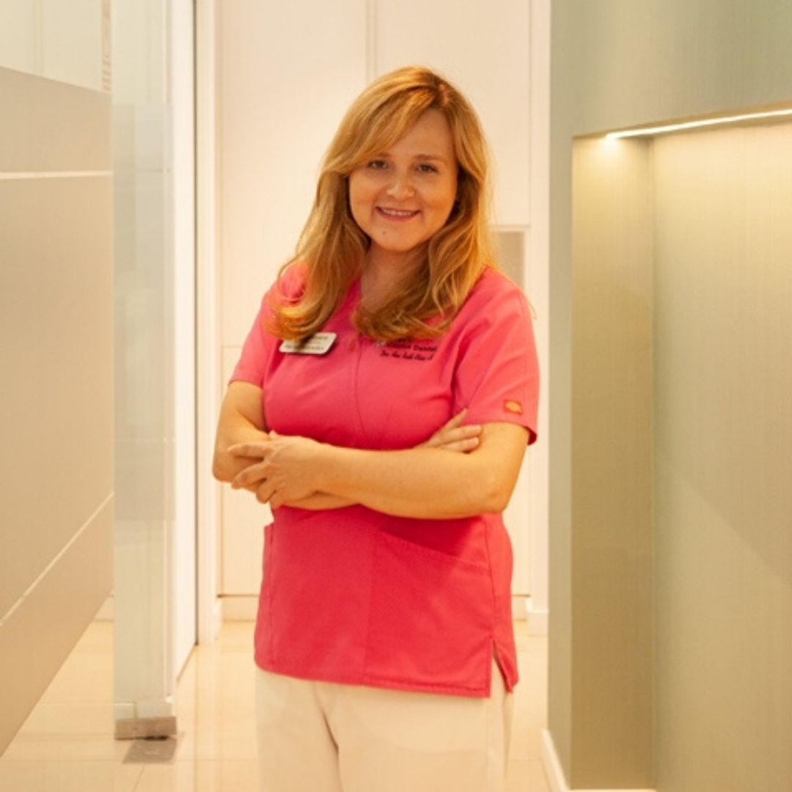

Periodoncia en Los Cristianos
Unas encías sanas forman parte de una sonrisa cuidada. En Clínica Dental Guayero valoramos la salud de tus encías y te explicamos qué atención necesitas, con un plan adaptado a tu caso.
Pide una valoración de tus encías922 79 74 05
La periodoncia se ocupa de las encías y de los tejidos que sostienen los dientes. En nuestra clínica dental en Los Cristianos te ayudamos a conocer su estado y a establecer los cuidados necesarios para proteger tu salud bucodental.
¿Te sangran las encías?
El sangrado al cepillarte, las encías inflamadas o el mal aliento persistente son motivos para consultar. También conviene revisar una encía que se retrae o un diente que empieza a moverse.
Estos cambios pueden tener distintas causas. Una exploración permite saber qué ocurre y si necesitas tratamiento periodontal, aunque no sientas dolor.
Gingivitis y periodontitis: ¿en qué se diferencian?
La gingivitis es una inflamación de la encía que puede revertir con el control de la placa bacteriana y la atención adecuada. La periodontitis afecta también a los tejidos y al hueso que sostienen los dientes.
Distinguirlas es importante para decidir el tratamiento. La pérdida de soporte requiere atención profesional y seguimiento; no se resuelve únicamente mejorando el cepillado.
Una valoración antes de empezar
En la consulta revisamos tus antecedentes, escuchamos tus molestias y exploramos las encías. Según los hallazgos, puede ser necesario registrar las medidas alrededor de los dientes y realizar radiografías para valorar su soporte.
Te explicaremos el diagnóstico, las opciones de tratamiento y el presupuesto antes de comenzar. También tendremos en cuenta tus hábitos y los cuidados que realizas en casa.
Tratamiento periodontal adaptado a tu caso
El tratamiento busca controlar la inflamación y eliminar los depósitos de placa y sarro. Cuando es necesario limpiar por debajo de la encía, se emplea la instrumentación periodontal, conocida como raspado y alisado radicular.
Tras esta fase se valora la respuesta de los tejidos para decidir los siguientes pasos. No todos los casos necesitan la misma intervención ni el mismo número de sesiones.
El mantenimiento también es tratamiento
La atención periodontal continúa después de la fase inicial. Las visitas de mantenimiento permiten revisar la evolución de las encías, eliminar depósitos y detectar cambios que requieran atención.
La frecuencia se establece según tu situación y tu riesgo. La constancia en las revisiones y en la higiene diaria ayuda a conservar la estabilidad alcanzada.
Cuidados que puedas mantener en casa
Te orientamos sobre el cepillado y la limpieza entre los dientes para que puedas cuidar las zonas de difícil acceso. Las pautas se adaptan a tu boca y se revisan durante el seguimiento.
Si llevas implantes, coméntalo en la consulta para incluirlos en la valoración y los cuidados. Puedes conocer este servicio en nuestra página de implantología en Los Cristianos.

Formación en Periodoncia e Implantología
La Dra. Ana Ruth Oliva Hernández es licenciada en Odontología por la Universidad Complutense de Madrid y cuenta con formación avanzada en Implantología y Periodoncia en el College of Dentistry de la Universidad de Nueva York (NYU).
Su preparación incluye el diploma en Elevación de Seno, Regeneración Ósea y Manejo de Tejidos Blandos por la Universidad Internacional de Catalunya, así como el diploma en Implantología y Regeneración Tisular de Straumann y Nobel.
Conoce a la doctora AnaPreguntas frecuentes sobre las encías
¿Es normal que me sangren las encías al cepillarme?
El sangrado puede ser una señal de inflamación y conviene valorar su causa, especialmente si se repite. No permite diagnosticar por sí solo una periodontitis: para saberlo es necesaria una exploración.
¿Una limpieza dental es lo mismo que un tratamiento periodontal?
No siempre. El tratamiento depende de dónde estén los depósitos y de si existe daño en los tejidos de soporte. Cuando hay periodontitis, una limpieza superficial puede no ser suficiente y se necesita un plan específico.
¿La periodontitis se cura para siempre?
Es una enfermedad crónica que puede controlarse. El tratamiento y el mantenimiento buscan frenar su progresión; por eso las revisiones y los cuidados diarios siguen siendo necesarios aunque las encías hayan mejorado.
¿Cada cuánto necesito una revisión periodontal?
La frecuencia se fija de forma individual, según el estado de las encías, la respuesta al tratamiento y los factores de riesgo. En la consulta te indicaremos cuándo volver y qué cuidados mantener entre visitas.
¿Cuánto cuesta el tratamiento de encías?
El importe depende del diagnóstico, las zonas que requieren atención y las sesiones previstas. Tras la valoración te explicaremos el plan y su presupuesto. Puedes consultar el precio de la primera visita al pedir cita.
¿Dónde puedo pedir cita de periodoncia en Los Cristianos?
Estamos en Av. Juan Carlos I, 26, Edificio Guayero, locales 7, 8 y 9, 38650 Los Cristianos, Arona, Santa Cruz de Tenerife. Llámanos al 922 79 74 05 o escríbenos por WhatsApp al 609 04 46 03.
Para ampliar la información: enfermedades de las encías, Federación Europea de Periodoncia y mantenimiento periodontal, SEPA.
Contacto
+34 922 79 74 05info@clinicadentalguayero.es
Avda. Juan Carlos I, 26 –
Edificio Guayero, Locales 7, 8 y 9
38650 Los Cristianos
Horario
Lunes a Viernes de 10:00-19:00h